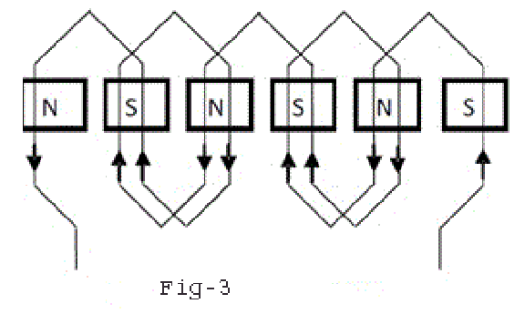

Single Phase Armature Winding
Concentrated Armature Winding
Distributed Armature Winding of Alternator
Lap Winding of Alternator
Wave Winding of Alternator
Concentric or Spiral Winding
Poly Phase Armature Winding of Alternator
Coil Group
Balanced Winding
Unbalanced Winding
Integral Slot and Fractional Slot Winding
Armature winding in an alternator may be either closed type open type. Closed winding forms star connection in armature winding of alternator.
There are some common properties of armature winding.
- First and most important property of an armature winding is, two sides of any coil should be under two adjacent poles. That means, coil span = pole pitch.
- The winding can either be single layer or double layer.
- Winding is so arranged in different armature slots, that it must produce sinusoidal emf.
Types of Armature Winding of Alternator
There are different types of armature winding used in alternator. The windings can be classified as
- Single phase and poly phase armature winding.
- Concentrated winding and distributed winding.
- Half coiled and whole coiled winding.
- Single layer and double layer winding.
- Lap, wave and concentric or spiral winding and
- Full pitched coil winding and fractional pitched coil winding.
In addition to these, armature winding of alternator can also integral slot winding and fractional slot winding.
Single Phase Armature Winding
Single phase armature winding can be either concentrated or distributed type.
Concentrated Armature Winding
Concentrated winding is employed where number of slots on the armature is equal to number of poles in the machine. This armature winding of alternator gives maximum output voltage but not exactly sinusoidal. The most simple single phase winding, is shown below in the figure-1. Here, number poles = number of slots = number of coil sides. Here, one coil side is inside one slot under one pole and other coil side inside other slot under next pole. Clearly the emf induced in one coil side is added to that of adjacent coil side.
Skelton Wave Winding
This arrangement of armature winding of alternator, is known as skelton wave winding. As per the fig-1, coil side-1 under N-pole is connected to coil side-2 under S-pole at the back and coil side-3 at the front and so on.
The direction of induced emf of coil side-1 is upward and emf induced in coil side-2 is downward. Again as coil side-3 is under N-pole, it will have emf in upward direction and so on. Hence total emf is summation of emf of all coil sides.
This form of armature winding is quite simple but rarely used as this requires considerable space for end connection of every coil side or conductor.
This problem can be overcome, sum extent by using multi turns coil. In order to get higher emf, the multi turn half coiled winding is used. Since the coils cover only one half of the armature periphery thus, this winding is referred as half coiled or hemi - tropic winding. This is shown in fig-2. If the coils are distribute over the whole armature periphery, then the armature winding of alternator is referred as whole coiled winding.
Half Coiled Winding
As shown in the fig-3 it is double layer winding, where one side of each coil placed on the top of armature slot where other side is placed in the bottom of the slot. (Represented by dotted lines). Hence it is essentially a double layer winding.

Distributed Armature Winding of Alternator
For obtaining smooth sinusoidal emf wave from, conductors are placed is several slots under single pole. This armature winding is known as distribute winding. Although distributed armature winding of alternator, reduces emf but still it very much usable due to following reason.
- It also reduces harmonic emf and so wave form is improved.
- It also diminishes armature reaction.
- Even distribution of conductors, helps for better cooling.
- The core is fully utilized as the conductors are distributed over the slots on the armature periphery.
Lap Winding of Alternator
Full pitched lap winding of 4 poles, 12 slots, 12 conductors (one conductor per slot) alternator is shown below.
The back pitch of the winding is equal to the number of conductors per pole i.e. = 3 and front pitch is equal to back pitch minus one. The winding is completed per pair of pole and then connected in series as shown in figure - 4 below.
Single Layer Lap Winding
Wave Winding of Alternator
Wave winding of same machine i.e. 4 pole, 12 slots, 12 conductors is shown in the figure-e below. Here, back pitch and front pitch both equal to number of conductor per pole.
Single Layer Wave Winding
Concentric or Spiral Winding
This winding for same machine, i.e. 4 poles 12 slot 12 conductors alternator is shown in the figure-f below. In this winding the coils are of different pitches. The outer coil pitch is 5, the middle coil pitch is 3 and inner coil pitch is one.
Single Layer Spiral Winding
Poly Phase Armature Winding of Alternator
Before discussing poly phase armature winding of alternator, we should go through some of related terms for better understanding.
Coil Group
It is product of number of phases and number of poles in a rotating machine.
Coil group = number of poles
Number of phases.
Balanced Winding
If under each pole face, there are equal number of coils of different phases, then the winding is said to be balanced winding. In balanced winding, coil group should be an even number.
Unbalanced Winding
If the number of coils per coil group is not a whole number, the winding is known as unbalanced winding. In such case each pole face contains unequal of coils of different phase. In two phase alternator, two single phase windings are placed on the armature by 90 electrical degree apart from each other.
In case of three phase alternator, three single phase windings are placed on the armature, by 60 degree (electrical) apart from each other.
The figure below represents, a Skelton 2 phase 4 pole winding two slots per pole. The electrical phase difference between adjacent slots=180/2 = 90 degree electrical).
Skelton Two Phase Winding
Point a and b are starting point of first and second phase winding of two, phase alternator. a’ and b’ are finishing point of first and second phase wining of two phase alternator, respectively. Figure below represents a Skelton 3 phase 4 pole winding, 3 slots per pole. The electrical phase difference between, adjacent slots is 180/ 3 =60 degree (electrical) a, b and c are starting point of Red, Yellow, and blue phases and a’, b’, and c’ are the finishing points of same Red, Yellow and Blue phases of the three phase winding.
Skelton Three Phase Winding
Say red phase winding starts at slot no 1 and ends over slot no 10. Then yellow winding or second winding starts at slot no 2 and ends over slot no 11. Third or blue phase winding starts at slot no 3 and ends at slot no 12. The phase difference of induced emfs, in red phase and yellow, yellow phase and blue phase and blue phase and red phase winding respective by 60 degree, 60 degree and 240 degree (electrical respectively). Since in three phase system, the phase difference between red, yellow and blue phase is 120 degree (electrical). This can be achieved by revering yellow phase (second winding) winding as shown in figure above.
Figure- below represents 4 pole, 24 slot, single layer, full pitched 3 phases distributed winding. No of slot per pole per phase
_______________________
The phase difference between emfs induced in the conductors, of two adjacent slots is _________
Hence,
| Slots No: 1, 2, 7, 8, 13, 14, 19, and 20 for R phase |
| Slots No: 5, 6, 11, 12, 17, 18, 23 and 24 for Y phase |
| Slots No: 3, 4, 9, 10, 15, 16, 21 and 22 for B phase |
The figure below shows three phase full pitched double layer lap winding. Each winding is spaced 120 electrical degrees from two adjacent winding. This winding has 12 slots per pole per phase. Since the winding is full pitched coil, so the pitch of each. Coil is 12 slots. Since one pole presents 180 electrical space degrees so the slots pitch. Corresponds to 180/12 i.e. 150 degree (electrical).
In a fractional pitch winding, the coil span is made less than 180 degrees electrical space degrees. In figure above a coil instead of having a pitch of 12 slots now has a pitch of 10 slots so that its spread is no longer equal to pole pitch.
There are two types of coil span. The first one is full pitched coil where, two sides of coil are 180 degree (electrical) apart. In full pitched coil when one side of coil is under N pole, the other side is in corresponding position, under S pole. The induced emfs in two opposite side of coil differ by 180 degree (electrical), hence the resultant, emf of the coil, is just arithmetic sum of these two emfs.
The second one is short pitched coil, where, two opposite side of a coil is not exactly 180 degree (electrical) it is less than that. In this case, the phase difference between emf of two coil side is also less than 180 degree (electrical). Hence, the resultant emf of the coil is not simple arithmetic sum of two emfs but it is vector sum of two emfs. Hence, resultant emf of short pitched coil is always less than that of full pitched coil. But still short pitched coil is preferably used because short pitched coil reduces or totally elements harmonics from wave forms.
Integral Slot and Fractional Slot Winding
When the number of slots per pole per phase is an integer, the winding is the integer slot winding but when the number slots per pole per phase is fractional number the winding is referred as fractional slot winding.
Fractional slot winding is practicable only with double layered winding. It limits the number of parallel circuit available, because phase group under several poles must be connected in series before a unit is formed and the widening respects the pattern to give second unit that can be put in parallel with the first.
 by
by